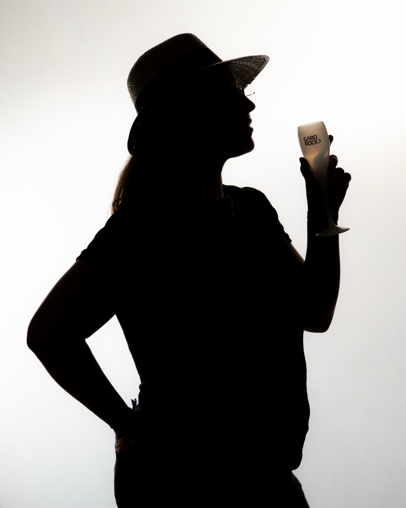
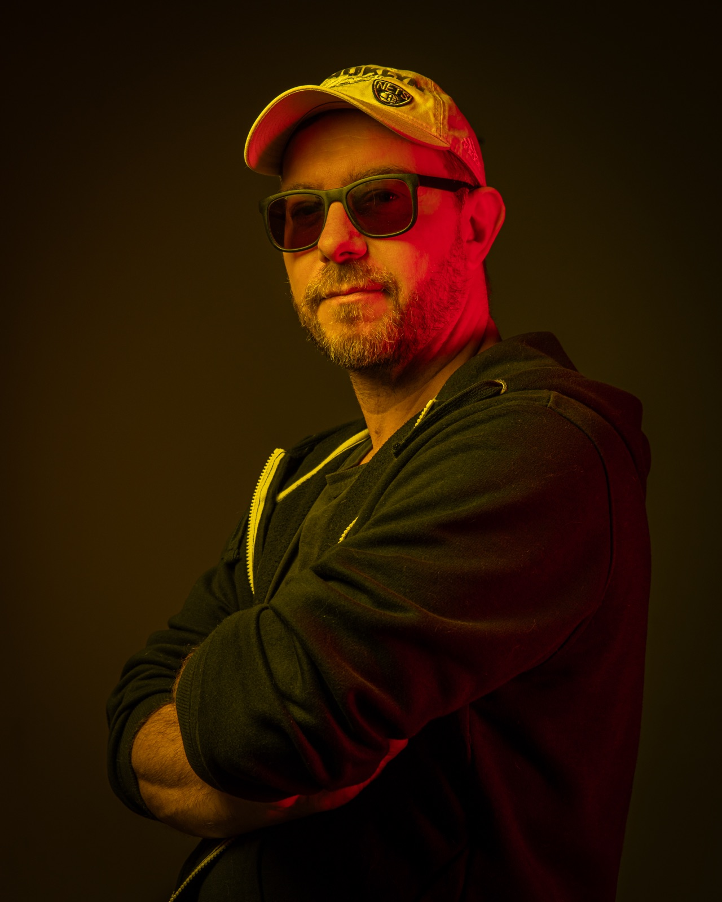
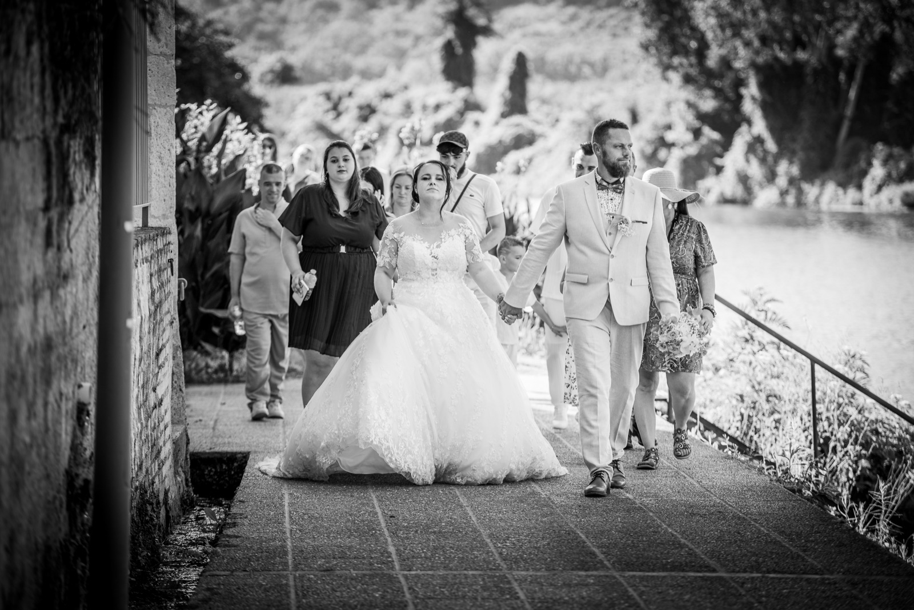
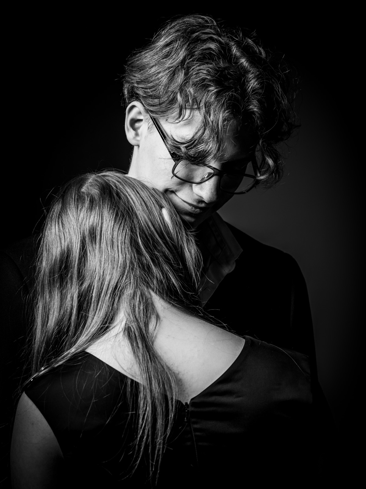
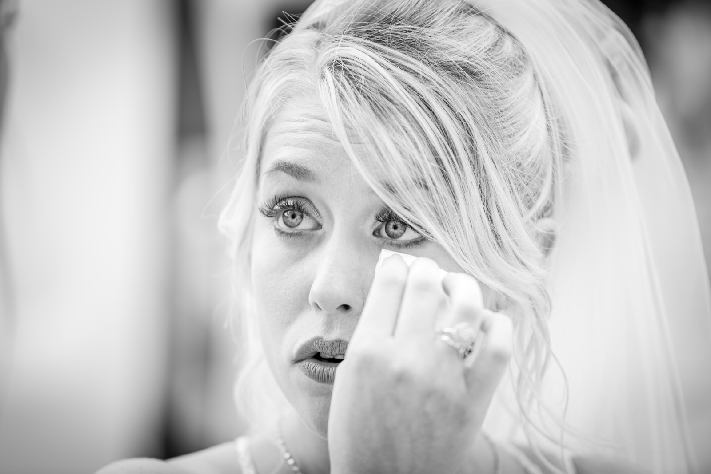
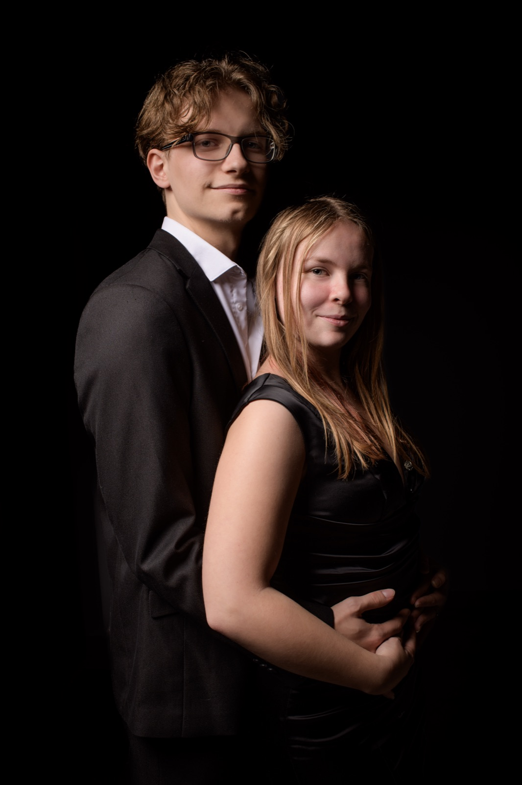
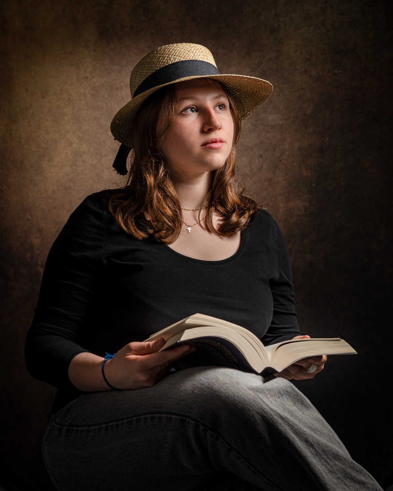

Marmande photographer,
at your service.


Photographer in Marmande
Professional photographer based in Caumont-sur-Garonne, on the doorstep of Marmande (Lot-et-Garonne). I photograph couples on their wedding day, run portrait sessions and also shoot concerts. I work throughout the Lot-et-Garonne département and in the southern Gironde.
Hello, I'm Laurent
A passionate professional dedicated to capturing the most precious moments of your life.
Capturing the present moment, naturally,
in your own surroundings.
Portfolio preview — weddings and portraits






Client reviews
Maurine Bardou
Un immense merci à Laurent Dugos pour avoir immortalisé notre mariage d'une manière aussi exceptionnelle ! Professionnalisme irréprochable, sympathique et à l'écoute. Le résultat est tout simplement magnifique.
Reviews are shown in their original language (French).
Leave a review on Google